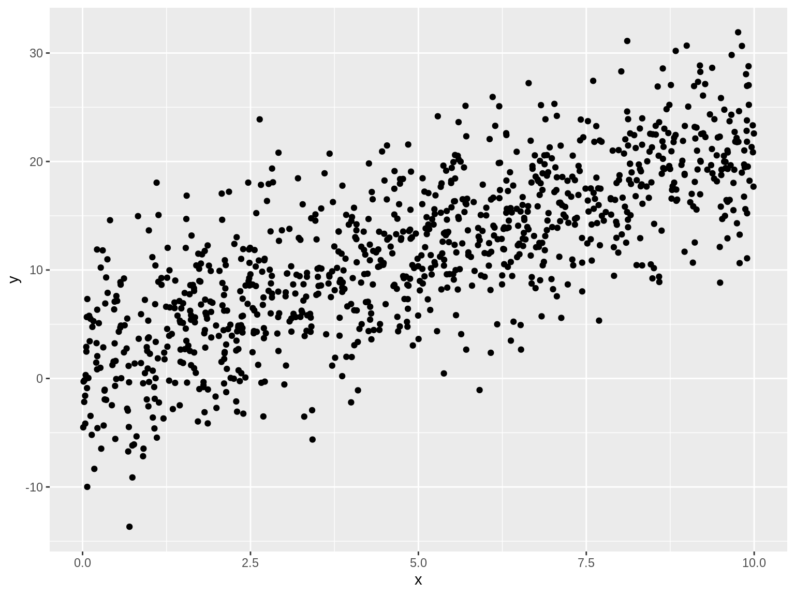

I gave a talk at SAS last year about using R to communicate with APIs.
As an afterthought, I fit a model. The fits were not satisfying because the data was largely categorical
From nflarrests.com:
Keep in mind there are 1700 NFL Players and their arrest rates are lower than the USA arrest rate.
Also: arrest != conviction
Categorical data acts to augment the linear structure.
I want to start off by talking about the differences between categorical and continuous data. Categorical is poisin for continuous predictors. Two (really one) solution is credibility/hierarchical models. This is basically the approach taken by Bailey/Simon in their paper on loss-rating a single driver.
The example that I’m using has a categorical output. It’d be real cool to show how categorical inputs aren’t that great at being woven into continuous outputs.
OK. Whatever. Make some displays about the categorical input/output. A few rectangular heatmaps for openers.
Show what the design matrix really looks like. Equate the category with “one hot” encoding.
Categorical data:
Continuous:
So there is a small probability of having more than one arrest. Compare this to Bailey/Simon probability of second accident.

AUC = Area Under the Curve
As entered
| id | metro | region |
|---|---|---|
| 1 | urban | north |
| 2 | urban | south |
| 3 | rural | east |
| 4 | urban | north |
CDT, or “one-hot encoding”
| id | metro_rural | metro_urban | region_east | region_north | region_south |
|---|---|---|---|---|---|
| 1 | 0 | 1 | 0 | 1 | 0 |
| 2 | 0 | 1 | 0 | 0 | 1 |
| 3 | 1 | 0 | 1 | 0 | 0 |
| 4 | 0 | 1 | 0 | 1 | 0 |
| id | metro_rural | metro_urban | region_east | region_north | region_south |
|---|---|---|---|---|---|
| 1 | 0 | 1 | 0 | 1 | 0 |
| 2 | 0 | 1 | 0 | 0 | 1 |
| 3 | 1 | 0 | 1 | 0 | 0 |
| 4 | 0 | 1 | 0 | 1 | 0 |